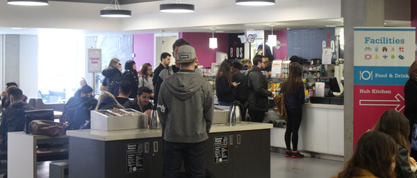
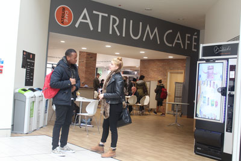
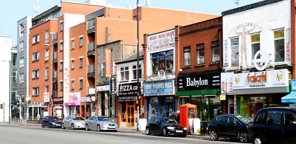

Our Restaurants
Universty Cafe's and Eating out in Manchester
At Manchester Metropolitan University we have various cafeterias for our students to enjoy and have something to eat or even just to socialise and have a chat with your friends. In the Geoffrey Manton Building, we have a cafe atrium where students can purchase hot and cold food. The hot food includes pizzas and Panini’s. The cold food includes sandwiches and baguettes; we have a variety of choice as the flavours are from across the globe for example you can have an Indian Ajee Baji. Also we have hot and cold drinks. Our hot drinks ranges are all sorts of coffee and tea for example Carmel Latte and Green tea. On the hand we have all sorts of crisp, chocolates, salads and many more.
Cafe Atrium
Manchester Metropolitan University finest cafe atrium is in Business School. In the Business school, we have a separate cafe atrium and canteen for student to enjoy our restaurant style food. You can get proper food that will fill you up, from our amazing canteen. You can get food like rice, chicken or even our popular fish and chips.
Outside of University
Outside of university you can enjoy amazing food from our popular road called Wilmslow road aka ‘Curry Mile’. On the curry mile you have a whole mile of southern Asian and Middle Eastern restaurants. If that isn’t enough for you we have some amazing restaurants around the city centre especially King Street. On King Street you have Rosso Italian, which is owned by our very own Rio Ferdinand. Also we have Jamie Oliver Italian as well which is astonishing. Finally if you want buffet style, then you can go to the popular venue Tops in City Centre or the well known Nawaabs on Stockport Road.